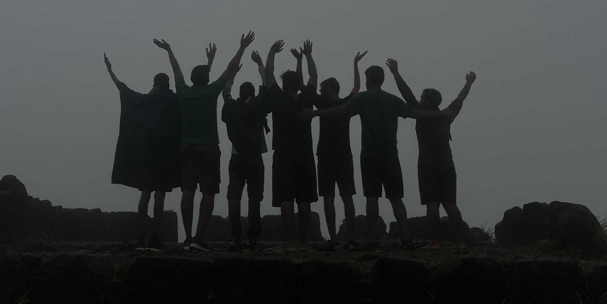
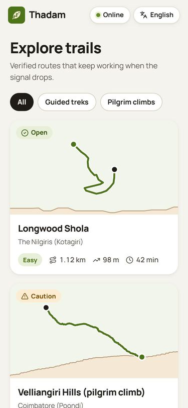
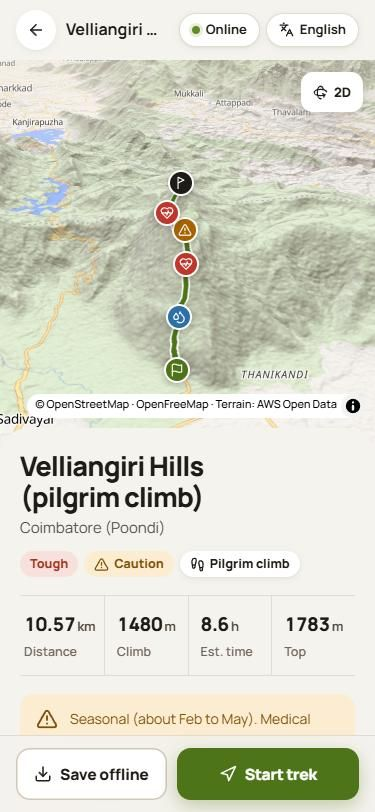
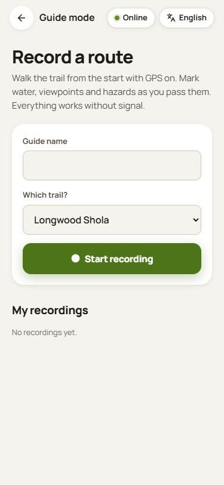

Baby Panda Treks · 18 treks and counting
Weekends, on foot.
We've walked to Gundar Zero Point
Small-group treks to forts, waterfalls and peaks across the Sahyadris, the Eastern Ghats and the Palani Hills.

The crew
18 summits. Same arms in the air.
Wet shoes, misty forts, and a group that's grown with every trek. There's room for you on the next one.
The trek journal
All 18 Baby Panda Treks so far, newest first, from our first monsoon trek in the Sahyadris to the shola forests of Kodaikanal.
-
Palani Hills
Forest trailTamil Nadu
Gundar Zero Point
A forest walk out from the Solar Observatory into the streams of the upper Palani Hills.
Read the story -
Sahyadris
Twin pinnaclesMaharashtra
Mangi Tungi
Two rock pinnacles joined by a saddle, with Jain cave temples cut into the cliffs.
Read the story -
Eastern Ghats
WaterfallAndhra Pradesh
Tada Falls
A forest walk along a stream to Ubbalamadugu, a waterfall dropping into a clear green pool.
Read the story -
Sahyadris
Hill fortMaharashtra
Sinhagad Fort
The Lion Fort above Pune, won back in 1670 at the cost of Tanaji Malusare's life.
Read the story -
Eastern Ghats
WaterfallAndhra Pradesh
Moola Kona Waterfall
A day of Andhra forest falls, from a hidden rock pool to Kailasakona beside its temple.
Read the story -
Sahyadris
WaterfallMaharashtra
Kataldhar Waterfall
A monsoon waterfall in a rock bowl, reached on foot through forest below Lonavla.
Read the story -
Sahyadris
CanyonMaharashtra
Sandhan Valley
The Valley of Shadows: a narrow canyon cut by water, deep enough to block out the sun.
Read the story -
Sahyadris
WaterfallMaharashtra
Aare Falls
A Sahyadri monsoon waterfall, and trek number eleven.
Read the story -
Sahyadris
Ridge traverseMaharashtra
K2S: Katraj to Sinhagad
Pune's classic long ridge walk, hill after hill from Katraj Ghat to the walls of Sinhagad.
Read the story -
Sahyadris
CavesMaharashtra
Nathbaba Caves
A trek to rock caves in the Sahyadris, our ninth.
Read the story -
Sahyadris
WaterfallMaharashtra
Kalu Waterfall
A tall monsoon waterfall in the Malshej region, falling off the edge of the plateau.
Read the story -
Sahyadris
Hill fortMaharashtra
Karnala Fort
A fort crowned by a thumb-shaped rock pinnacle, inside the Karnala Bird Sanctuary.
Read the story -
Sahyadris
Hill fortMaharashtra
Harishchandragad
The great Sahyadri fort: Konkan Kada's sheer cliff, an ancient cave temple and Taramati peak.
Read the story -
Sahyadris
PeakMaharashtra
Tahuli Peak
A quiet peak near Kalyan with rock pinnacles on top and long views over the plains.
Read the story -
Sahyadris
Hill fortMaharashtra
Peb Fort
Vikatgad: a fort below Matheran, reached by ladders and a narrow ledge on the rock face.
Read the story -
Sahyadris
PlateauMaharashtra
Garbett Plateau
A wide, grassy plateau at the north end of the Matheran range, open to the sky.
Read the story -
Sahyadris
Hill fortMaharashtra
Sondai Fort
A small fort near Karjat with a short climb, a ladder near the top and rock-cut water cisterns.
Read the story -
Sahyadris
Monsoon trekMaharashtra
Katildhar
Where Baby Panda Treks began: trek number one.
Read the story
Where we've walked
From the Sahyadri forts around Mumbai and Pune to the Andhra waterfalls near Chennai and the shola forests of Kodaikanal. Pins are approximate; a few treks aren't pinned yet.
- Gundar Zero PointTamil Nadu
- Mangi TungiMaharashtra
- Tada FallsAndhra Pradesh
- Sinhagad FortMaharashtra
- Moola Kona WaterfallAndhra Pradesh
- Kataldhar WaterfallMaharashtra
- Sandhan ValleyMaharashtra
- Aare FallsMaharashtra
- K2S: Katraj to SinhagadMaharashtra
- Nathbaba CavesMaharashtra
- Kalu WaterfallMaharashtra
- Karnala FortMaharashtra
- HarishchandragadMaharashtra
- Tahuli PeakMaharashtra
- Peb FortMaharashtra
- Garbett PlateauMaharashtra
- Sondai FortMaharashtra
- KatildharMaharashtra
 Our app · தடம்
Our app · தடம்
Thadam: a trail companion for when the signal drops.
On our treks we kept running into two problems: trail information that was wrong or missing, and no help once the network disappeared. Thadam is our answer, starting with Tamil Nadu's forest and temple trails.
Verified trail cards
True distance, total climb, time by fitness level and the steepest stretch, computed from real route and elevation data.
Works with no signal
Download a trail pack before you lose network. Map, route and your position keep working on the trail.
Off-route alerts
If you stray more than 40 m from the path, your phone buzzes and shows the way back.
Check in, check out
Tell the trail office you've started. If you're overdue, someone knows. Safety features are always free.



Join the next trek
We announce every trip on Instagram first. Small groups, pickup points shared with each trip, and no experience needed for most trails.
- 1
Follow along
New treks, dates and pickup points go up on @babypanda.top.
- 2
Register
Use the registration link in our Instagram bio. We'll confirm your spot and send the details.
- 3
Show up ready
Good shoes, water, a rain layer. Each trek post here says what else to pack.
Questions? Call +91 86674 49954, or message us on Instagram.
First trek with us?
The questions people ask most before signing up.
Do I need trekking experience?
Not for most of our trails. Each trek post describes the terrain, so you can judge whether it suits you. If you're unsure, call or message us before registering.
How do I sign up?
Every trip is announced on our Instagram, @babypanda.top, with the date, pickup points and a registration link in the bio. We confirm your spot after you register.
What should I carry?
Shoes with good grip, at least two litres of water, a rain layer and a small snack. Waterfall and canyon treks need a change of clothes. Each trek post lists what else to pack.
What happens if it rains heavily?
Streams and canyons can rise quickly. If a crossing or a stretch looks unsafe on the day, we turn back. No view is worth the risk.
Is Thadam free?
Thadam is a free Android app, in preview, that you can download from thadam.babypanda.top. Its safety features — offline maps, off-route alerts and check-in — will always be free.